Overview
Keymapper is a non-destructive shortcut manager for Blender and Bforartists. It lets you create custom shortcuts in a managed list — organized into folders, with one-click presets, import/export, and live conflict detection.
Instead of editing Blender’s keymap directly — which is destructive, error-prone, and hard to undo — Keymapper layers your shortcuts on top. When a shortcut collides with a built-in default, that specific default is disabled, and it is restored automatically the moment the shortcut is removed or deactivated. Nothing in the factory keymap is ever overwritten.
This layered approach also means you're never locked to a frozen keymap. Keymapper works on top of whichever keyconfig you use — Blender, Industry Compatible, Bforartists, or a custom template — and you can switch between them freely. And when the Blender team adds or changes default keybindings in a new version, those changes reach you as normal: everything you haven't overridden stays stock, so your setup never falls behind the way a manually edited or exported keymap does.
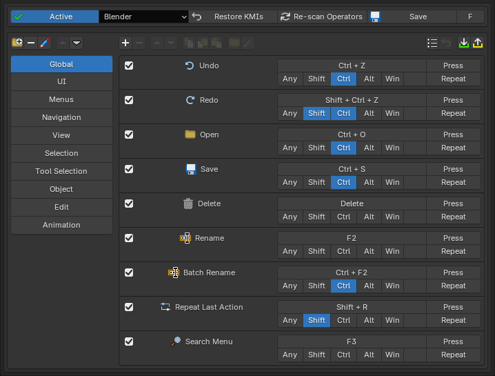
Highlights
- Non-destructive — factory keybindings are never overwritten, only temporarily disabled while your shortcut needs the key.
- Any keyconfig — works on top of Blender, Industry Compatible, Bforartists, or custom templates, and switching stays safe.
- Multi-operator entries — one or more keybinds bound to many operators, so entries work across multiple editor contexts.
- Conflict detection — see exactly what a shortcut collides with — Blender's defaults, your own KMIs, and KMIs added by other addons — before you commit.
- Presets — apply curated shortcut sets with one click, and restore any edited preset entry back to its original.
- Import / Export — share your full setup as a single JSON file.

Compatibility
Blender, Bforartists – version 5.1 – 5.2
Installation
There are several ways to install Keymapper — use whichever fits you best.
Drag and drop from Superhive
The fastest route. On your Superhive orders page, drag the Keymapper extension straight from the browser into the Blender window. The first time, Blender asks for your Superhive API token (found in your Superhive account settings) and adds Superhive as a remote extension repository.
Once connected, all your Superhive purchases appear under
Preferences > Get Extensions with one-click Install — and
you get update notifications inside Blender whenever a new version is
released.
See Superhive’s own guides: extension support announcement and connecting Superhive as a remote repository.
Install through Blender's extension system
With Superhive connected as a remote repository (see above), open
Edit > Preferences > Get Extensions, find Keymapper in
the list, and press Install. Updates later are a single
click on Update.
Drag and drop the downloaded zip
Download the Keymapper .zip from Superhive (do not extract
it), then drag the file from your file browser into the Blender window and
confirm the install prompt.
Install from Disk
- Download the Keymapper
.zipfrom Superhive. Do not extract it. - In Blender, open
Edit > Preferences > Add-ons. - Click the dropdown arrow in the top-right corner and choose Install from Disk…
- Select the downloaded
.zipand confirm. - Make sure the checkbox next to Keymapper is enabled.
All methods work in Bforartists too — Keymapper detects the host application automatically.
Updating
Via the Superhive repository: press Update in
Get Extensions. Manually: install the new version over the old
one and restart. Your shortcuts, folders, and settings are preserved either
way.
Uninstalling
Before removing the addon, press Restore KMIs in the Keymapper panel to return every keybinding to its original state, then disable or remove Keymapper from the Add-ons list.
Getting Started
Keymapper's panel can be shown in three places, toggled in the addon preferences:
Edit > Preferences > Keymap— shown at the top of the Keymap section (default).- The N-panel in the 3D Viewport, under the Keymapper tab.
- The addon's own preferences page.
To choose where it shows, open the addon preferences
(Edit > Preferences > Add-ons > Keymapper) and expand
the Panel Visibility dropdown — one toggle per location.
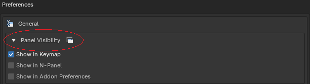
This is the Keymapper panel as it appears in
Preferences > Keymap, its default location:
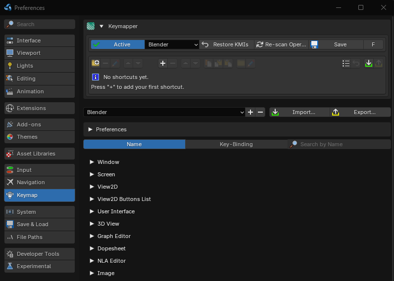
Keymap">The Settings row
At the top of the panel you'll find:
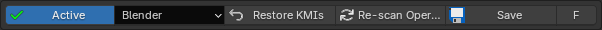
- Active / Inactive — the master switch. Turning it off unregisters all your shortcuts and restores every disabled default.
- Keyconfig dropdown — the native keyconfig template Blender is using (Blender, Industry Compatible, etc.).
- Restore KMIs — removes all Keymapper entries (KMIs = keymap items, Blender's individual keybinding entries) and restores defaults.
- Re-scan Operators — refreshes the operator and keymap scan; it turns red when a re-scan is recommended (e.g. after enabling other addons or switching keyconfig template).
- Save — saves your entries; highlighted when there are unsaved changes.
- F / P — toggles between friendly operator names and raw Python identifiers.
Creating Shortcuts
- Click the + button in the toolbar to open the entry form.
- Pick one or more operators via Browse Operators.
- Set the keybinding — key, modifiers (Shift/Ctrl/Alt/Win), and event type (Press, Click, Drag, …).
- Confirm. The shortcut is registered immediately.
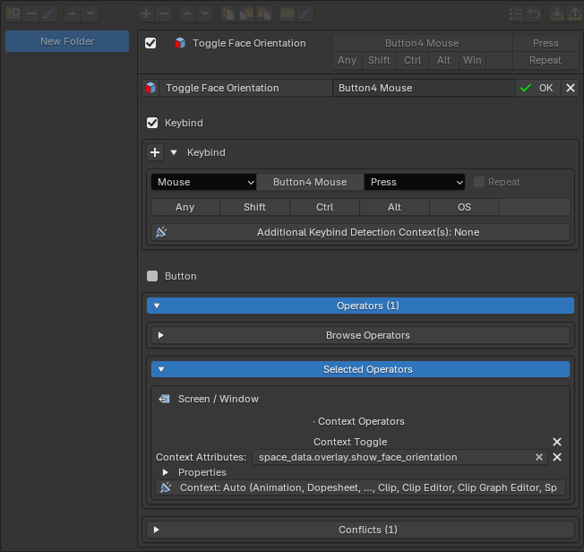
Adding from the right-click menu
The fastest way to bind something you're looking at: right-click a button or menu item in the UI and choose Add Keymapper Shortcut Entry… The entry form opens with that operator already filled in — just set the keybind and confirm.
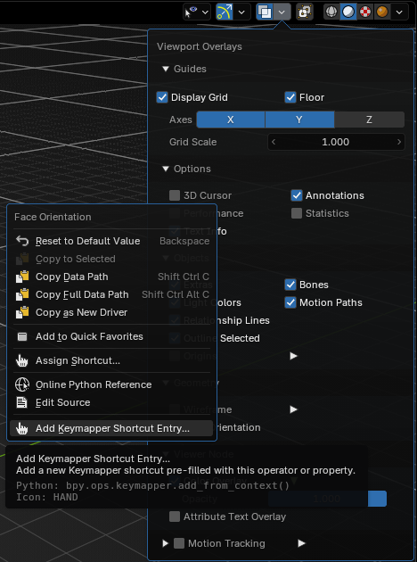
Browse modes
- All — every operator, organized into categories.
- Simple — curated multi-operator actions, e.g. one "Select All" that covers every editor and mode at once.
- Factory — every binding the factory keymap actually uses. Disabled by default; enable in preferences under Other.
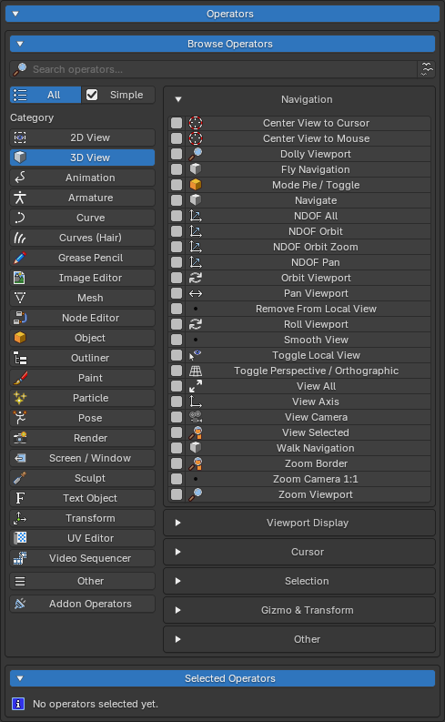
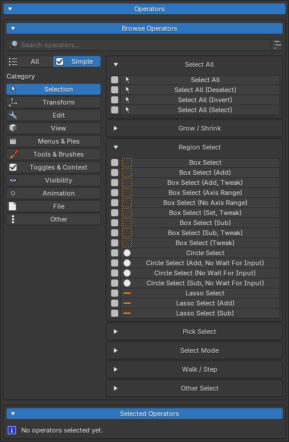
Multi-Operator Entries
An entry can hold several operators and several extra keybinds at the same time. Each operator in the entry carries its own context (which editor or mode it fires in) and its own properties, editable per operator in the entry form. Because contexts don't overlap, the operators never fight each other — the one that belongs to the editor you're in is the one that runs.
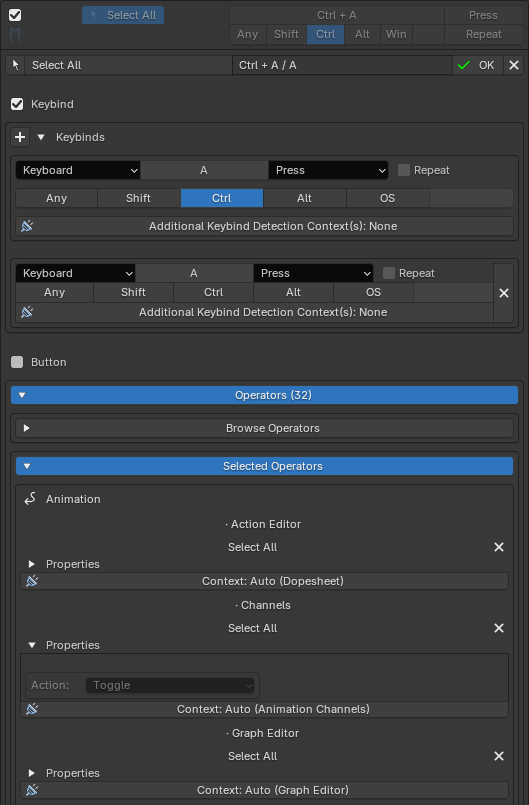
This is what makes one key work "everywhere": a single Select All entry can
carry mesh.select_all, object.select_all,
curve.select_all and more, each scoped to its home context.
Contexts can be left on automatic, where Keymapper resolves each operator's
home keymaps for you, or set manually per operator. The live conflict
preview at the bottom of the form updates as you edit.
The quickest way to build one is the Simple browse mode: selecting a multi-op there adds the whole bundle of operators in one click, with the correct per-operator contexts and properties already set.
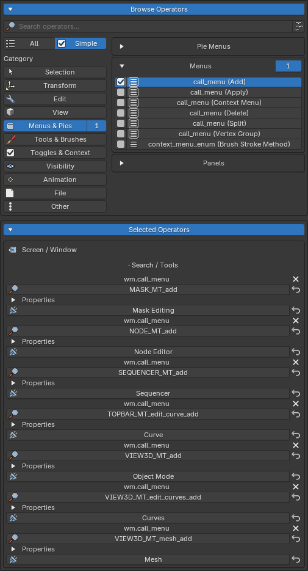
Labels & Icons
Entry labels
An entry's displayed name comes in two flavors. By default it is pre-registered: Keymapper derives it from the entry's first operator using its friendly-name catalog (the F/P button in the Settings row switches between these friendly names and the raw Python identifiers). Set a custom label in the entry form and it overrides the derived name entirely — useful when a bundle of operators deserves a name of its own.
Custom icons
Each entry shows an icon, automatically resolved from its first operator. To change it, open the entry form and click the icon to open the icon picker — browse by category or search, preview the current and selected icon side by side, and use Reset to Auto to return to the automatic choice.
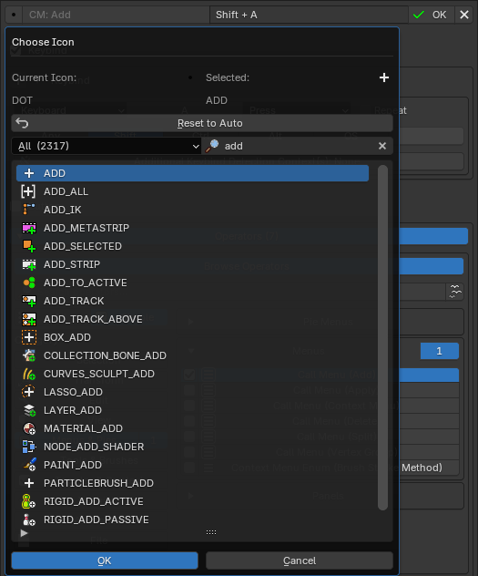
Entry Buttons
A shortcut doesn't have to be a keybind at all — an entry can also be a button placed in Blender's UI. In the entry form, enable Button and pick one or more locations from the dropdown; the button shows the entry's icon and/or label (both can be customized, though at least one must stay on). Pressing it runs the first of the entry's operators that is valid in that context.
Keybind and Button can be combined on the same entry, but at least one of the two must remain enabled. A button-only entry registers no keybindings and disables no defaults — by default it is excluded from conflict scanning, with an optional informational mode in its settings.
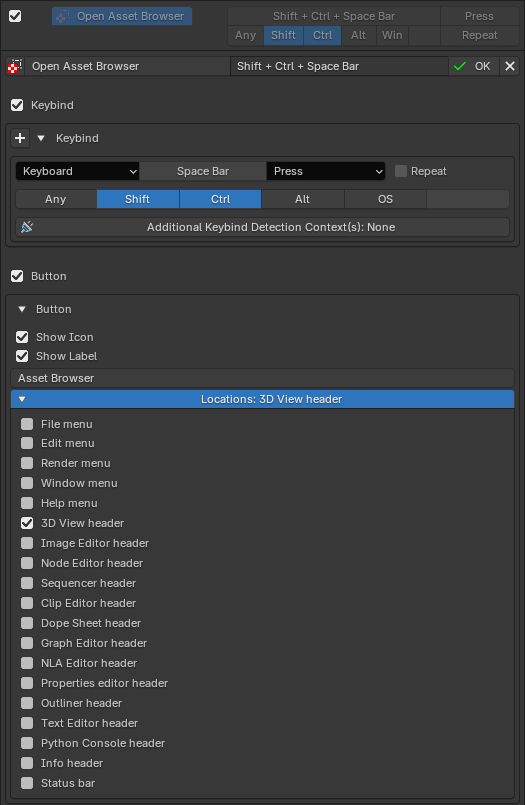

Additional Keybind Detection Contexts
Every keybind slot in the entry form has an Additional Keybind Detection Context(s) dropdown. Contexts checked here don't create a keybinding — they extend the conflict detection for that key, so same-key defaults in those extra contexts are disabled too. Use it when a default binding in a context your operators don't cover would otherwise still swallow your key. Contexts the entry's operators already occupy show pre-checked and locked.
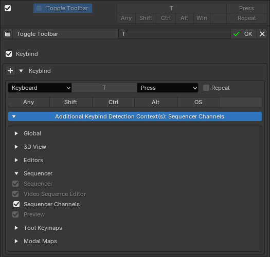
Folders & Presets
Folders
Entries are organized into collapsible folders. Use the toolbar to create, remove, rename or move up/down folders. You can also move entries up/down, duplicate, and copy/paste entries between folders. The folder icon in the toolbar is specifically for moving entries to other folders.

Shortcut Presets
The Shortcut Presets popup offers curated folders of ready-made shortcuts — navigation, selection, tools, pie menus and more. Apply everything with Add All, a single folder, or individual entries.

Applied preset entries remember where they came from: if you edit one, a Restore button lets you revert it to the original preset definition at any time.
Conflict Detection
Keymapper continuously checks your entries against two kinds of conflicts:
- Against Blender's defaults — shortcut conflicts (a default doing the same thing) and keybind conflicts (a different action already on your key).
- Between your own entries — duplicates, shared keys, and overlapping operators, marked with a warning icon on the entry card.
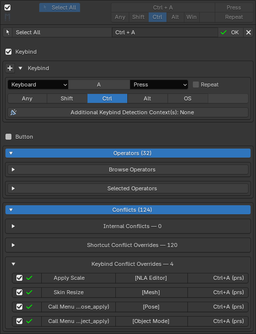
Clicking an entry's conflict icon enters focus mode, dimming everything not involved in that conflict so you can see exactly which entries collide.
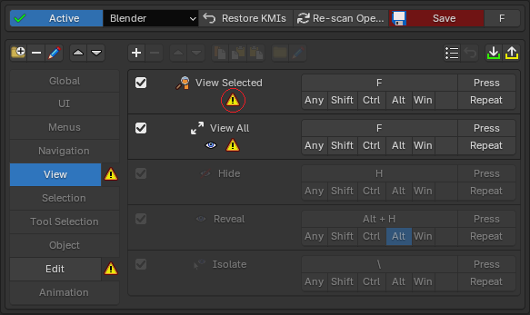
A conflict is not necessarily a problem — disabling a colliding default is exactly how Keymapper gives your shortcut priority. The icons are there so you always know what a binding affects.
Turning the overriding off
By default, when one of your shortcuts conflicts with a built-in binding,
Keymapper overrides it — the colliding default is disabled
so your shortcut wins. If you'd rather keep certain defaults active, this
can be switched off per conflict type in the addon preferences, under
Conflict Detection > Conflict Overrides:
- Override Shortcut Conflicts — controls whether defaults that do the same thing as your entry get disabled, with a sub-toggle for defaults whose operator properties differ.
- Override Keybind Conflicts — controls whether defaults sitting on the same key get disabled, with a per-action-value matrix (Press, Release, Click, Double Click, Click Drag) for fine-grained control over which event types count.
With an override switched off, conflicts of that type are still detected and shown on the entry — but the default keybinding is left untouched.
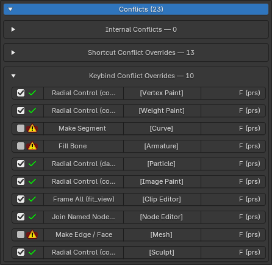
What counts as a conflict is configurable in the addon preferences — including which keyconfig layers are scanned and how property and action values are compared.
Import / Export
The export button in the toolbar saves your complete setup — folders, entries, keybinds, and operator properties — to a single JSON file. Import merges a JSON file back in, recreating folders and entries and registering their shortcuts immediately.

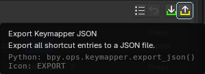
This is also the easiest way to move your shortcuts between Blender and Bforartists, between machines, or to share a setup with someone else.
Settings
The addon preferences (Edit > Preferences > Add-ons > Keymapper) contain:
- Panel Visibility — choose where the Keymapper panel appears (Keymap preferences, N-panel, addon preferences).
- Conflict Detection — which keyconfig layers are scanned (Factory / User / Addon) and override rules for shortcut and keybind conflicts, including a per-action-value detection matrix.
- Other — extra options such as enabling the Factory browse mode.
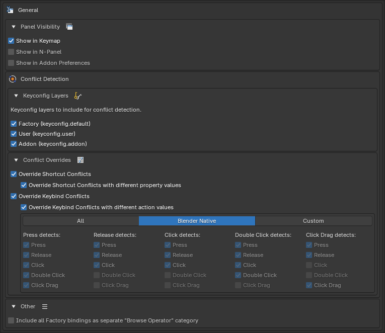
Every checkbox shows a restore button whenever its value differs from the default, so you can always get back to stock behavior.